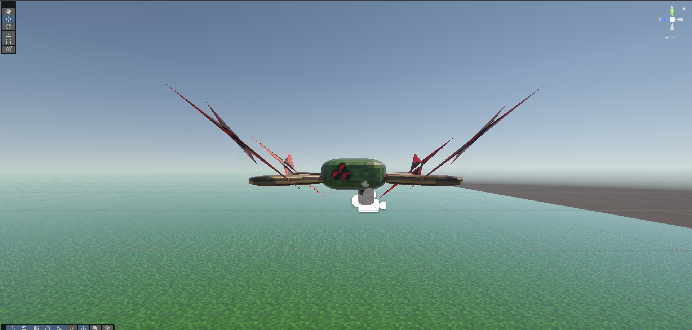
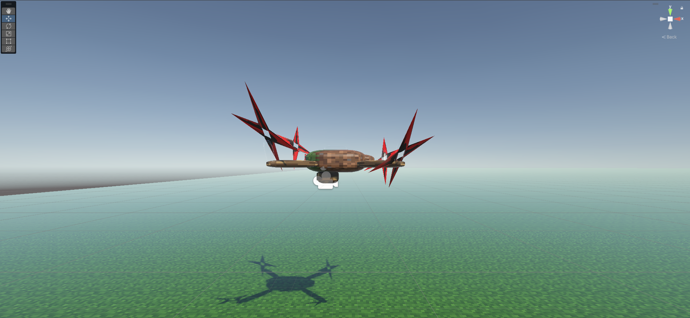
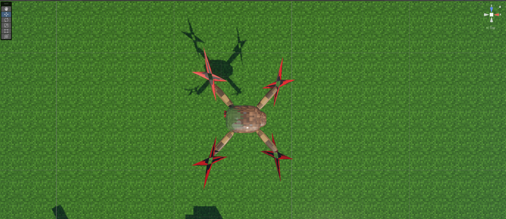

Робот-дрон
Готовый 3D-ассет для Unity (.fbx). Включает базовую риг-структуру и обновленный контроллер DroneController.cs. Скрипт управляет полетом (WASD), вращением корпуса мышью и камерой с ограничением угла обзора. Подходит для NPC/дронов.
Главное преимущество: Не требует настройки в Blender. Иерархия объектов и точки вращения (Origin) уже настроены правильно.
Модель с готовой иерархией (Root -> Arms -> Props). Все оси вращения выставлены.
Полный контроль полета: WASD, поворот корпуса, камера с ограничением взгляда.
Пошаговая инструкция по установке и настройке.




🚀 3 шага, чтобы дрон полетел
-
1
Импорт
Перетащи файл Drone.fbx из архива в окно Project в Unity.
-
2
Сборка
Перетащи объект DroneRoot из Project в окно Hierarchy. Ты увидишь готовую структуру: корпус, лучи, пропеллеры и камеру уже на своих местах.
-
3
Оживление
1. Повесь скрипт DroneController на объект DroneRoot.
2. В поле Camera Transform перетащи объект MainCam (если не перетащить, скрипт сам попробует найти активную камеру).
3. Нажми Play. Курсор автоматически скроется и зафиксируется в центре экрана.
🧠 Разбор ключевых строк кода
Эти строки из DroneController.cs делают всю магию. Смотри, как просто это устроено:
// Двигаем дрон относительно его собственных осей. Если нос дрона повернут вправо, // то нажатие W полетит именно «вперед» для дрона, а не строго по карте.
// Поворот всего корпуса дрона вокруг вертикальной оси (ось мыши X).
// Ограничивает угол обзора камеры. Без этого игрок мог бы сделать «сальто» камерой // и полностью потерять ориентацию в пространстве.
// «Страховка» для новичка: если забыл перетащить камеру в поле скрипта, // скрипт сам найдет главную камеру в сцене.
// Скрывает курсор и фиксирует его в центре экрана при старте игры.
⚠️ Чек-лист: если что-то не работает
Камера «вывернулась» или дрон крутится странно
Проверь, что в скрипте поле Camera Transform либо заполнено объектом камеры, либо оставлено пустым (тогда сработает автопоиск). Если ты вручную повесил камеру на другой объект, убедись, что она является дочерней для DroneRoot.
Дрон летит боком или назад
Это значит, что модель экспортирована с неверной осью Forward. В этом ассете оси настроены правильно (нос дрона смотрит по Z+). Если ты менял модель сам — проверь экспорт FBX.
Курсор не скрывается
Убедись, что метод Start() вызывается. Если ты добавил свой собственный скрипт инициализации поверх этого, он может блокировать выполнение команд скрытия курсора.
Нет реакции на мышь
Проверь настройки Input Manager в Unity (Edit > Project Settings > Input Manager). Должны быть оси "Mouse X" и "Mouse Y". В Legacy Input они есть по умолчанию.
Space.Self) и ограничения углов камеры. Не предназначен для прямого использования в коммерческих AAA-проектах без доработки.